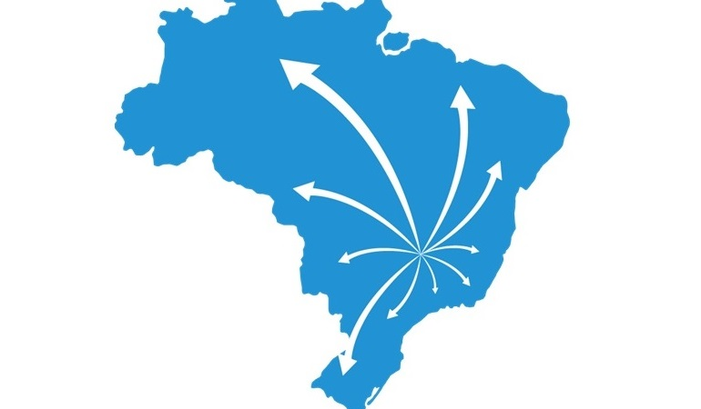

Regressão Linear - Projeção de Preços
Devido ao crescimento de uma empresa de E-Commerce que atua no ramo de Moda, foi identificada a necessidade de implantar um modelo de
precificação mais eficiente do que o utilizado atualmente, já que este não atende mais aos padrões da empresa. Com base nos dados históricos da empresa,
foi desenvolvio um modelo de projeção de preços que considera cada produto de maneira individual, baseado em suas características. Com a implementação
deste modelo foi possível projetar os preços dos produtos com uma margem média de erro de aproximadamente 10%, provendo à Diretoria Financeira um modelo
de precificação mais eficiente.
Ferramentas: Python, Machine Learning, Estrutura Json.
Regressão Linear - Estimativa de Vendas
Considerando que uma Rede de Farmácias precisa iniciar uma série de reformas em suas lojas a fim de melhorar o atendimento
aos seus clientes, foi identificada a necessidade de um correto direcionamento dos recursos a serem disponibilizados a cada loja através de
seu histórico de vendas. Com a implementação do modelo foi possível direcionar de maneira mais assertiva os recursos financeiros com base na
projeção de vendas das próximas semanas, garantindo uma margem de erro de aproximadamente 11%, resultando em uma base de dados confiável para
a definição dos orçamentos a cada loja.
Ferramentas: Python, Machine Learning.
Classificação - Taxa de Satisfação de Clientes
O objetivo deste projeto foi desenvolver um Modelo de Previsão do Nível de Satisfação dos Clientes de uma rede de lojas
para entender rapidamente se clientes possuem propensão em avaliar a loja de maneira negativa, permitindo à equipe responsável
implementar ações para tentar reverter esse quadro. Com a implementação do modelo foi possível prever a taxa de avaliação dos clientes
com uma precisão de 98%, ou seja, dentre 100 avaliações de clientes, é viável que 98 avaliações sejam previstas com exatidão.
Ferramentas: Python, Machine Learning.

Insights - Análise de Restaurantes
O principal objetivo deste projeto foi criar um Relatório que possibilite Análises Estratégicas e forneça
Insights valiosos para tomadas de decisões por parte da gestão de uma empresa do ramo de Marketplace de Restaurantes. Desta
forma, foi possível concluir que com base nos dados dispostos a empresa pode focar em ações específicas de marketing voltadas
a certos países, cidades e tipos de culinária, podendo trazer um incremento considerável na receita, bem como aquisição de mais
clientes e posterior maior adesão à plataforma.
Ferramentas: Python, Streamlit, Data Visualization.
Classificação - Taxa de Cancelamento de Reservas de Hotéis
Considerando o Histórico de Reservas dos hóspedes de uma rede de hotéis, o objetivo deste projeto foi desenvolver um
Modelo de Previsão da Taxa de Cancelamentos das reservas registradas atualmente. Com a implementação do modelo foi possível prever a
taxa de cancelamentos com uma eficácia de 97%, ou seja, entre 100 registros com dados de clientes, o modelo pode prever a possibilidade
de cancelamento de até 97 registros com exatidão.
Ferramentas: Python, Machine Learning, Excel.

Clusterização - Otimização de Logística
Neste projeto foi realizada a tratativa da Base de Dados com informações sobre a distribuição de produtos de uma grande cervejaria
utilizando Técnicas de Clusterização para posterior importação em uma ferramenta de Visualização de Dados no Mapa.
Com base na solução proposta, pode-se observar a real possibilidade de incrementar o lucro operacional da empresa com a
Otimização de Distribuição e Logística de Produtos nas principais regiões do país.
Ferramentas: Python, Machine Learning, Excel, Google My Maps.